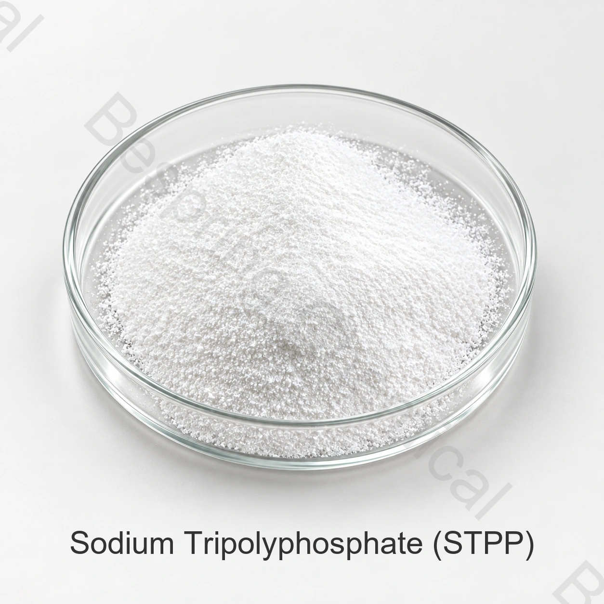

水分管理
在適當的蛋白質配方中，可支援持水性和加工產量。
食品磷酸鹽 · INS 451(i) · STPP
百泉化工提供食品級三聚磷酸鈉(STPP/E451(i ) ) 白色粉末或顆粒，用於合格的食品加工應用。買家可以在要求報價之前檢視身份、商業參考限值、包裝和文件要求。

產品圖片 · 訂購時請確認等級與包裝
包括所需標準、數量、托盤偏好、目的地和應用，以便高效審查。
定義規格關鍵品質指標
25公斤包裝牛皮紙外袋，內袋PE
24個月保質期從製造日期起，在規定的儲存條件下
集裝箱選項帶或不帶托盤
產品概述
食品級三聚磷酸鈉是三磷酸的五鈉鹽。亦稱三磷酸五鈉，食品法典（Codex）INS編號為451(i)。該材料以白色顆粒或粉末形式供應，在需要磷酸鹽功能時配製成選定的加工食品。
對於採購，“食品級”永遠不應被視為整個規格。買家還應確認 含量測定，P2O5不溶性物質，汙染物限值，顆粒形態，測試方法和目的地市場的文件。
配方值
STPP可提供多種技術功能，但效能取決於整個磷酸鹽系統、原料、製程條件和合法使用水平。
在適當的蛋白質配方中，可支援持水性和加工產量。
幫助加工商在驗證的配方中管理口感、稠度和成品質構。
在選定的加工食品應用中支援穩定的脂肪、蛋白質和水系統。
結合某些可能干擾產品或製程效能的金屬離子。
典型應用領域
必須根據製造商和目的地市場的規定審查預期食品類別、劑量和宣告。
STPP 被用於保溼、質構和製程產量非常重要的經過驗證的鹽水、醃料和加工蛋白質系統。
食品磷酸鹽可用於選定的乳製品和更廣泛的加工食品配方，用於乳化、穩定或礦物離子管理。
產品規格
以下為食品級 STPP 商業參考限值；訂單驗收依簽署規格、商定測試方法及批次 COA。
可橫向滑動或使用鍵盤查看完整表格
| 檢測專案 | 規格 | 表達 |
|---|---|---|
| 含量（Na5P3O10) | ≥ 85.0 | % |
| P2O5 | 56.0–58.0 | % |
| 不溶於水的物質 | ≤ 0.1 | % |
| 氟化物 | ≤ 50 | ppm |
| 砷 | ≤ 3 | ppm |
| 重金屬 | ≤ 10 | ppm |
| 鉛 | ≤ 4 | ppm |
| 外觀 | 白色顆粒或粉末 | 視覺 |
資料表說明： 由於測試條件、裝置和方法的差異，結果可能會有所不同。在簽訂合同之前確認方法、取樣規則和驗收標準。
FAO／WHO JECFA專論將三磷酸五鈉標識為INS 451(i)、CAS 7758-29-4，並列出螯合劑及質構改良劑功能。其無水物身份規格包括至少85%的Na5O10P3 和 56-58% P2O5。美國FDA食品物質清單也列出了三聚磷酸鈉，CAS 編號為7758-29-4。這些參考資料有助於驗證身份;它們並不能取代目的地市場的批准或合同規格。
供應商資質
有用的報價應確定準確的等級和接受標準，而不僅僅是縮寫“STPP ” 。
確認三聚磷酸鈉，CAS 7758-29-4,INS/E451(i ) , 所需食品標準和預期目的地市場。
統一含量、P2O5, 不溶性物質，汙染物，單位，取樣和分析方法.
說明粉末或顆粒的偏好、應用、配方條件以及任何溶解度或粒徑要求。
請求現行規格、批次COA和適用的佐證文件;確認袋子、托盤、數量和目的地。
等級適用範圍： 食品級和工業級或洗滌劑級不應被視為可互換。在批准之前對等級、設施文件和預期合法用途進行認證。
包裝與物流
最終裝載取決於集裝箱限制、路線、托盤尺寸和運輸要求。
儲存和保質期
相關選擇資源
採購常見問題
用於需要磷酸鹽功能的允許食品應用，包括選定的肉類、家禽、海鮮、乳製品和加工食品配方。精確的功能和使用水平取決於配方、製程和當地法規。
三磷酸五鈉的食品法典（Codex）INS編號為451(i)。市場特定名稱和允許用途可能有所不同，因此買方應核實目的地市場的要求。
不是。本頁面介紹了所提供的參考限值。分析證書報告了特定批次的結果，應根據商定的採購規格進行檢查。
不是。同一化學名稱並不確定適合食品使用。確認所提供的等級、規格、支援文件、製造控制和對目標市場的監管適用性。
標準包裝為淨重25公斤的牛皮紙外袋，內有PE袋。參考裝載量為23噸/20GP不帶托盤或18噸/20GP帶托盤，視發貨確認而定。
提供所需的食品標準、粉末或顆粒偏好、數量、包裝、托盤要求、目的地港口、應用和交付目標。
向銷售團隊詢問規格、技術資料表（TDS）、安全資料表（SDS）、適用的品質文件和樣品可用性。說明您的應用和目的地，以便能夠審查相關文件。
開始採購對話
分享影響產品選擇、集裝箱裝載和上岸成本的商業和技術細節。
請提供產品等級和目的地市場，以便確認適用於該訂單的資料。
外部參考資料不等於批次分析證書或百泉產品規格書。